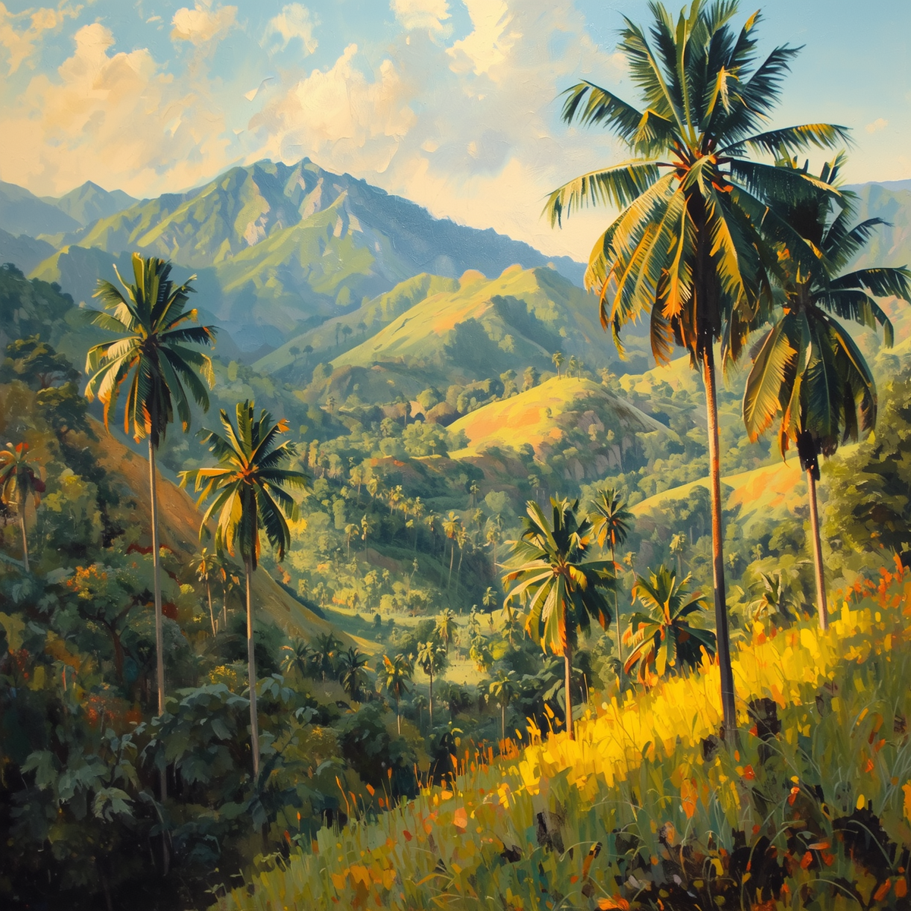
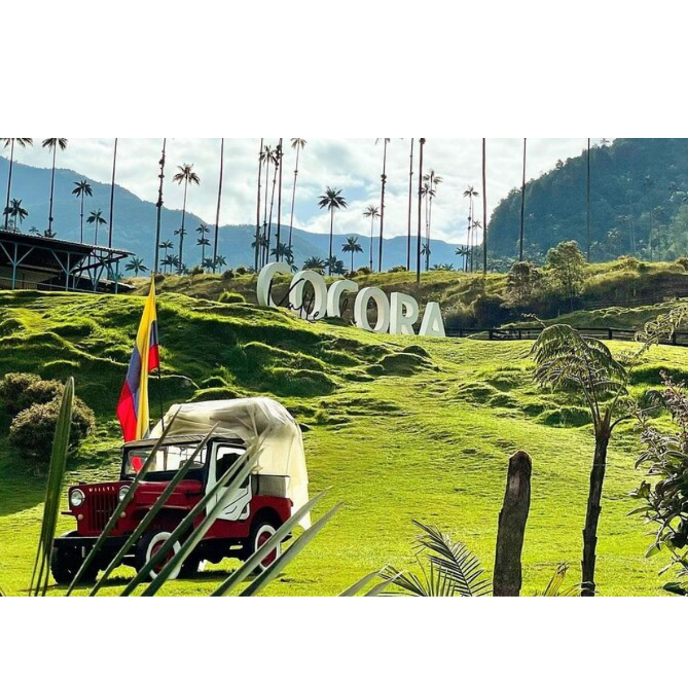
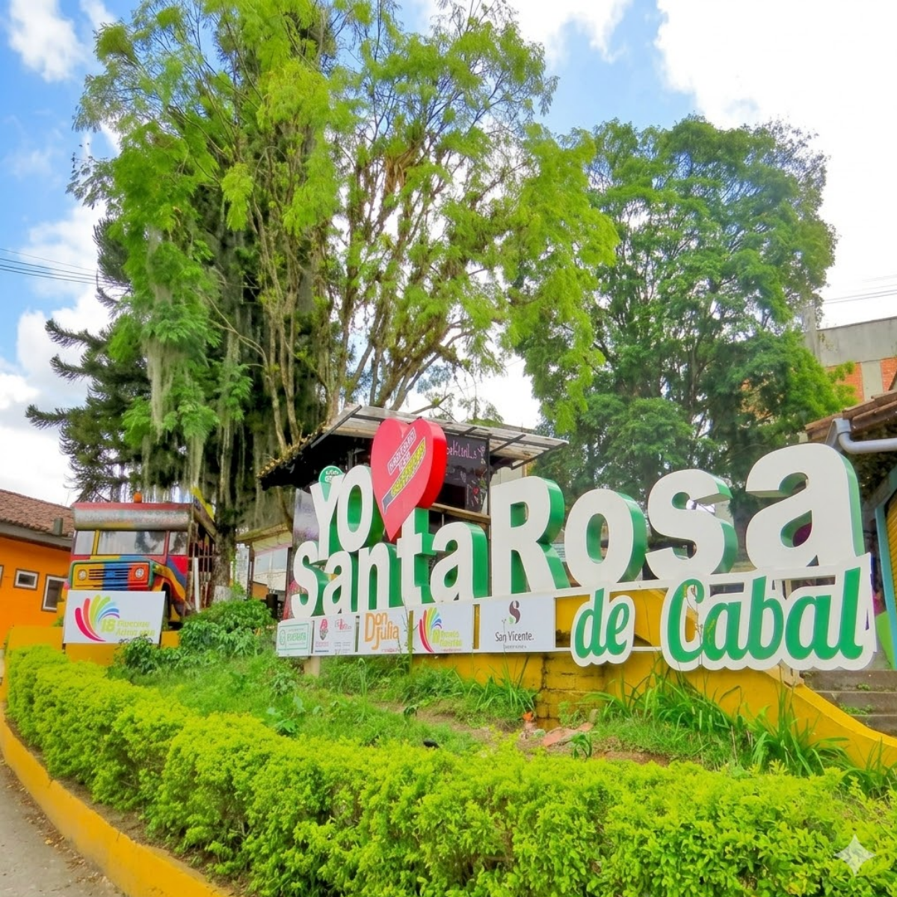

CulturaSalento
Zona tradicional donde se cultiva café y se conservan prácticas cafeteras desde hace generaciones.
Exploración interactiva
Explora el mapa y haz clic en cada lugar para conocer qué relación tiene con la cultura del café en el Eje Cafetero

CulturaZona tradicional donde se cultiva café y se conservan prácticas cafeteras desde hace generaciones.

NaturalezaEntorno natural que permite entender las condiciones donde crece el café en el Eje Cafetero.

TradiciónMunicipio donde la cultura cafetera se refleja en la vida diaria, la gastronomía y las costumbres.
 Ciudad
Ciudad
Ciudad que impulsó el comercio, transporte y crecimiento económico del café en la región.